项目概况
OVERVIEW规范智能检索与问答系统 是一套面向工程建设从业者的本地化规范检索与管理工具。它将分散的施工规范文本（国标、行标等）导入为结构化条文库，提供全文检索、分类管理、规则自动分类、AI 智能问答等能力，帮助使用者快速定位规范条文原文。
全文检索
关键词搜索条文，支持包含非条文内容、CE 精排、现行/修订中状态筛选。
规范管理
导入、校核、查看、编辑、删除规范与条文，支持状态维护与批量重分类。
规则分类
通过关键词规则 + AI 分类，自动为条文打标签，配合人工审核闭环。
词库维护
同义词 / 别名 / 易混淆术语管理，扩展检索召回，支持 CSV 批量导入。
AI 问答
基于条文库的综合问答与原文摘抄两种模式，回复标注规范来源。
运维自检
健康检查、向量索引重建、备份与日志，保障知识库长期可用。
系统界面概览
打开系统地址（本地部署为 http://127.0.0.1:8023），进入主界面，左侧为功能导航区（搜索框、筛选选项、功能按钮、分类筛选），右侧为主内容区，页面底部为全站统一的免责提示语。
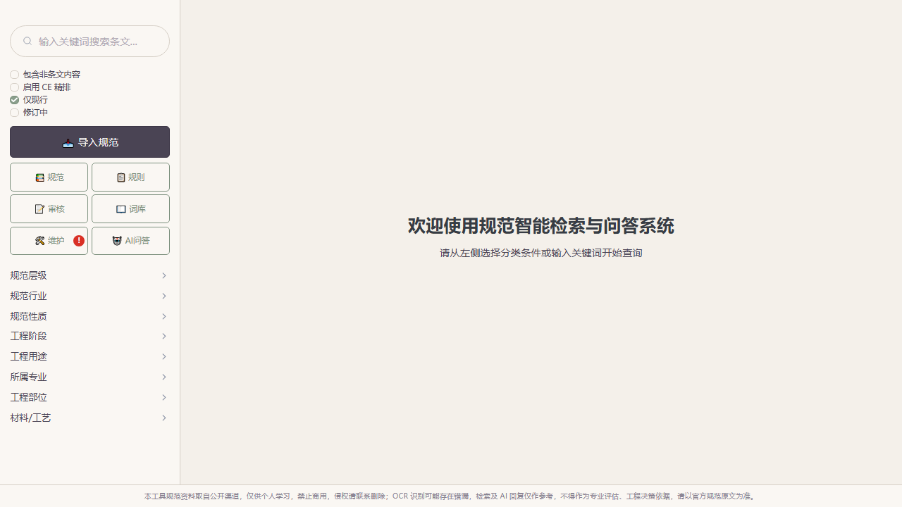
主要功能入口
| 入口 | 用途 | 说明 |
|---|---|---|
导入规范 | 导入规范文件（Markdown / PDF 等） | 支持 AI 校核规范名称有效性 |
规范 | 规范列表与条文管理 | 查看条文、编辑、分类、删除 |
规则 | 分类规则管理 | 新建规则、运行 AI 分类 |
审核 | 待审核内容处理 | 条文待审、词面校核、黑名单 |
词库 | 同义词 / 别名 / 易混淆术语 | 支持 CSV 批量导入与模板下载 |
维护 | 知识库健康检查与运维 | 索引重建、备份、日志、参数设置 |
AI 问答 | AI 智能问答 | 原文摘抄 / 综合问答两种模式 |
界面总览
GET STARTED界面布局
- 顶部：系统名称与当前页面标题。
- 左侧功能导航：搜索框、四个筛选开关（包含非条文内容 / 启用 CE 精排 / 仅现行 / 修订中）、七个功能入口、八类分类筛选（规范层级、规范行业、规范性质、工程阶段、工程用途、所属专业、工程部位、材料/工艺）。
- 主内容区：随所选功能切换。
- 页脚：所有页面统一显示免责提示语（见第 13 章）。
规范导入
IMPORT点击左侧导入规范按钮，打开「导入规范文件」对话框。系统支持 Markdown 等文本格式的规范文件，导入后自动解析为条文入库。
导入流程
点击左栏导入规范，打开导入对话框。
填写规范编号（如 GB 50204-2015）与规范名称（如《混凝土结构工程施工质量验收规范》），确认状态（现行 / 修订中）。
点击校核有效性，由 AI 校验规范编号与名称，返回标准名称建议。
选择规范文件（点击选择文件，在系统文件对话框中定位文件）。扫描件或格式丢失的 PDF 请勾选强制 OCR。
点击开始导入，等待上传、解析、完成三步骤全部通过。
导入对话框
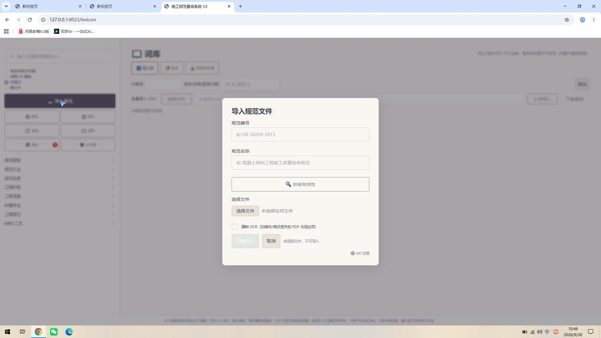
AI 校核有效性
填写编号与名称后点击校核有效性，系统调用 AI 校验规范名称，返回建议的标准名称，可点击应用采纳建议，或忽略保留原输入。
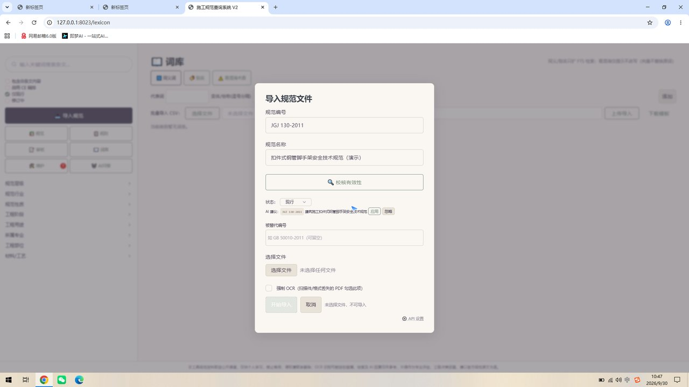
导入完成
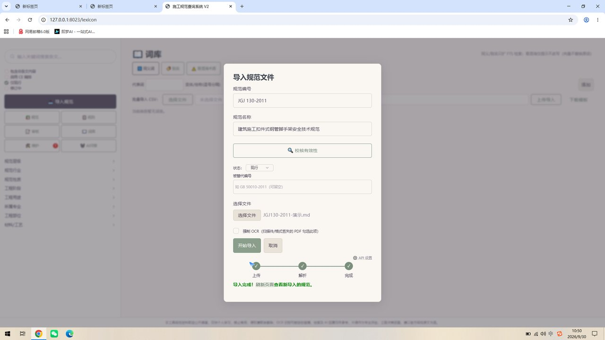
规范管理
SPECIFICATIONS点击左栏规范进入规范管理页。这里集中管理所有已导入的规范文件，支持查看条文、编辑分类、删除规范。
规范列表
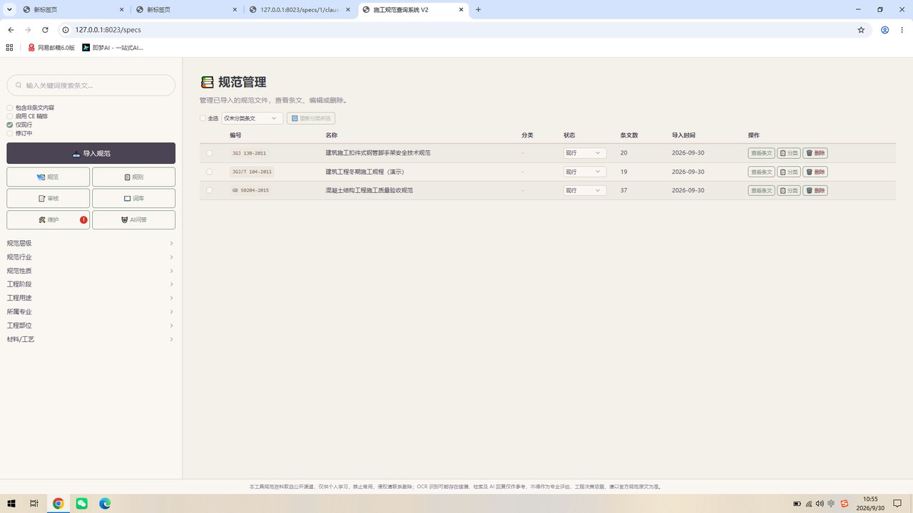
列表各列含义：
| 列 | 说明 |
|---|---|
| 编号 / 名称 | 规范标准号与规范名称（导入时可经 AI 校核） |
| 分类 | 当前条文的分类维度标签；未分类显示 - |
| 状态 | 现行或修订中，影响检索时的默认过滤 |
| 条文数 | 该规范解析出的条文总数 |
| 导入时间 | 导入入库的时间 |
| 操作 | 查看条文 / 分类 / 删除 |
列表工具
- 全选：勾选多条规范后执行批量操作。
- 仅未分类条文：只显示尚未打分类标签的规范。
- 重新分类所选：对勾选规范的全部条文按现有规则重新执行分类。
条文查看与编辑
CLAUSES在规范列表点击查看条文，进入该规范的条文管理页，可逐条查看条文号、标题、内容与分类，并对条文进行编辑、分类、删除。
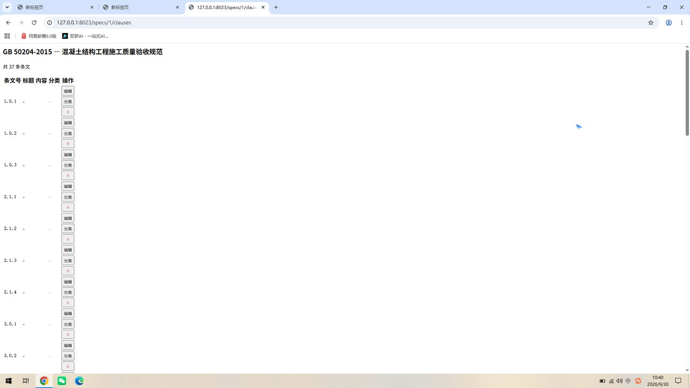
条文的操作
| 操作 | 说明 |
|---|---|
编辑 | 进入条文编辑页，修改条文标题与内容正文，修正 OCR 或解析产生的错漏 |
分类 | 为单条条文指定或修改分类维度标签（规范层级、工程阶段、材料/工艺等） |
删除 | 删除该条文（不可恢复，请谨慎） |
-。若导入文本中条文标题与正文未分离，可通过编辑页补全，便于检索结果展示更清晰。检索与筛选
SEARCH系统提供关键词全文检索与多维分类筛选两种方式定位条文，二者可组合使用。
关键词检索
在左侧搜索框输入关键词（如「钢筋」）后回车，主内容区列出命中条文。每条结果展示：所属规范编号与名称、条文号、章标题、条文内容摘录、状态标签。
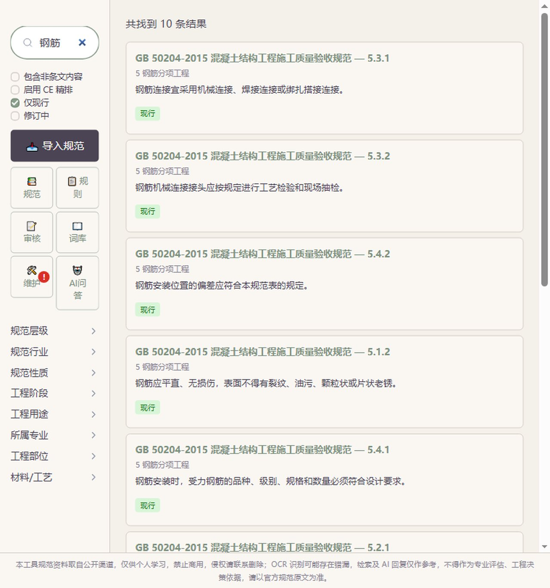
筛选开关
- 包含非条文内容：是否检索规范中除条文外的其他内容（前言、附录说明等）。
- 启用 CE 精排：使用 CE 精排（Cross-Encoder）对结果按相关性重新排序，命中更精准。
- 仅现行 / 修订中：按规范状态过滤结果。
分类筛选
左栏底部提供八类维度：规范层级、规范行业、规范性质、工程阶段、工程用途、所属专业、工程部位、材料/工艺。展开分类树勾选后，检索与列表均按所选维度过滤。
分类规则管理
RULES点击左栏规则进入分类规则管理页。规则用于自动为条文打分类标签：系统按规则的关键词与维度匹配条文，也可由 AI 批量分析给出分类建议。
规则管理页
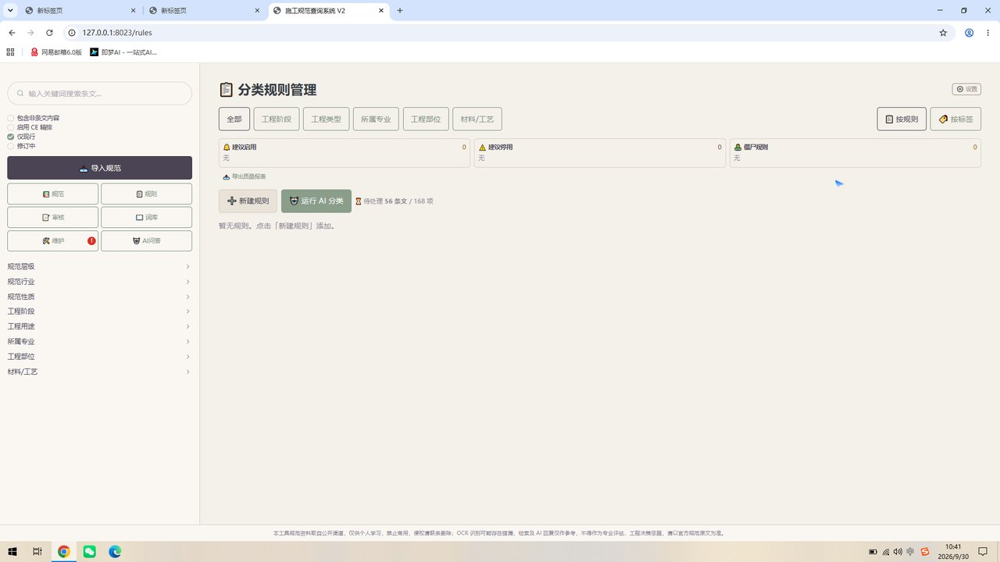
页面要素
| 要素 | 说明 |
|---|---|
| 维度标签页 | 全部 / 工程阶段 / 工程类型 / 所属专业 / 工程部位 / 材料/工艺 |
| 统计栏 | 建议启用、建议停用、僵尸规则的数量（无：表示暂无对应规则） |
| 待处理 | 如「待处理 56 条文 / 168 项」——尚未分类或待确认的条文数与候选项数 |
| 查看方式 | 按规则 / 按标签 切换列表组织方式 |
| 按钮 | 导出质量报表 新建规则 运行 AI 分类 |
新建规则
点击新建规则，在对话框中配置规则。规则命中后会把「标签」写入条文分类；同一标签可配置多个关键词。
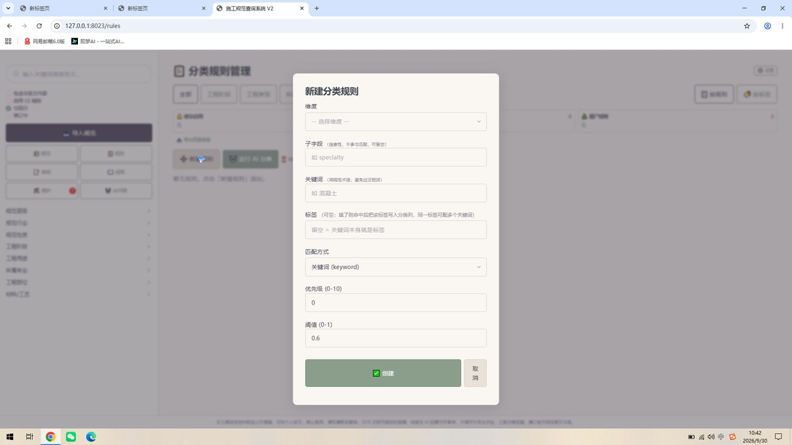
| 字段 | 说明 |
|---|---|
| 维度 | 规则所属分类维度（工程阶段、所属专业等） |
| 子字段 | 信息性字段，不参与匹配，可留空 |
| 关键词 | 用于匹配条文的规范术语（避免过泛词），如「混凝土」 |
| 标签 | 命中后写入分类的标签；留空则关键词本身即标签 |
| 匹配方式 | 关键词（keyword）匹配 |
| 优先级 | 0–10，多条规则同时命中时按优先级取舍 |
| 阈值 | 0–1，匹配得分达到该值才生效（AI 分类场景） |
运行 AI 分类
- 点击运行 AI 分类，系统对未分类条文进行批量 AI 分析。
- 分类建议进入待处理区，供人工在「审核」页确认（见第 8 章）。
- 确认后标签写入条文，规则页统计随之更新。
审核
REVIEW点击左栏审核进入审核页。这里汇集需要人工确认的内容，形成「AI 生成建议 → 人工审核 → 正式生效」的闭环。
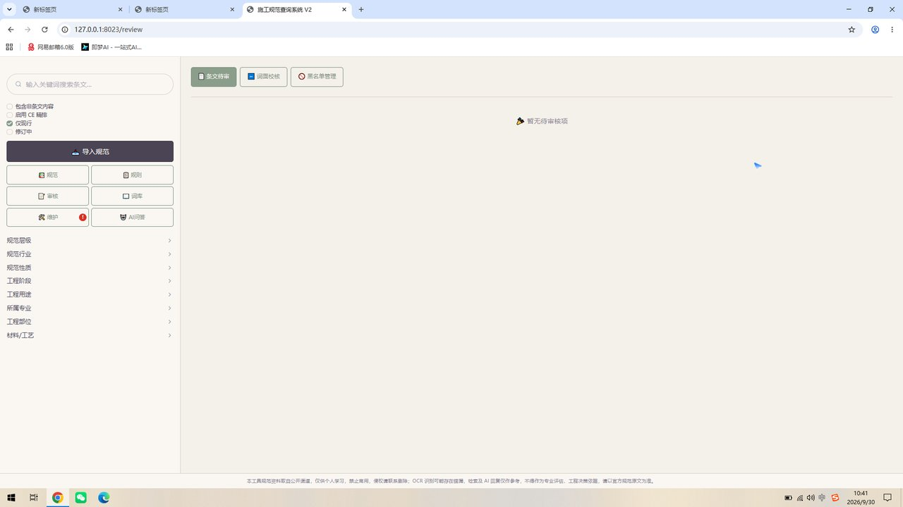
审核分页
| 分页 | 说明 |
|---|---|
| 条文待审 | AI 分类建议、规则命中结果等，逐条确认「采纳 / 修改 / 忽略」 |
| 词面校核 | 词库导入或 AI 生成的同义词/别名建议复核 |
| 黑名单管理 | 维护禁止改写或需特殊处理的术语清单 |
词库管理
LEXICON点击左栏词库进入词库管理页。词库用于维护三类术语关系，扩展检索召回并控制改写行为。
三个类别
| 类别 | 作用 |
|---|---|
| 同义词 | 如「混凝土」↔「砼」：只扩展全文检索（FTS）召回，不改写原文 |
| 别名 | 术语的俗称、简写，同样只扩展检索 |
| 易混淆术语 | 仅作检索提示，不改写、不替换原文中的词（向量检索不替换原词） |
添加词条
选择类别标签（同义词 / 别名 / 易混淆术语）。
填写代表词（如「混凝土」）。
填写变体/俗称（逗号分隔，如 砼,混凝土）。
点击添加，词条写入对应类别。
批量导入 CSV
- 点击下载模板获取 CSV 格式模板。
- 按模板填写词条后，点击选择文件定位 CSV。
- 点击上传导入，系统批量写入词库。
知识库维护
MAINTENANCE点击左栏维护进入知识库维护页。这里提供健康检查、导出备份、日志管理、QA 日志、参数设置，用于日常运维与异常排查。
健康检查
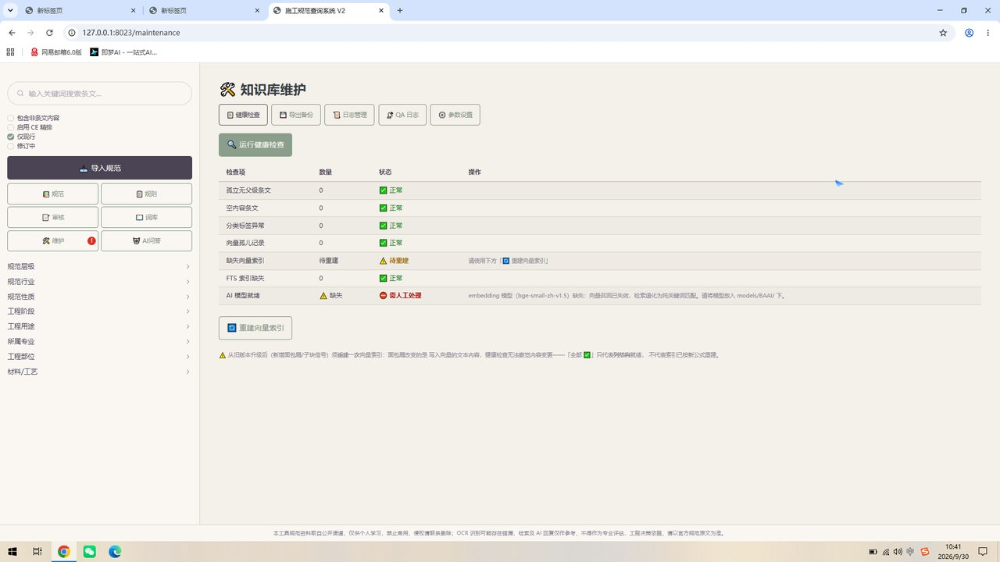
| 检查项 | 含义 |
|---|---|
| 孤立无父级条文 | 缺少所属章节父级的条文数（正常为 0） |
| 空内容条文 | 内容为空的条文数（正常为 0） |
| 分类标签异常 | 分类标签格式或层级异常的条文数（正常为 0） |
| 向量孤儿记录 | 向量索引中存在但已无对应条文的记录数（正常为 0） |
| 缺失向量索引 | 向量索引是否已构建；缺失时显示「待重建」 |
| FTS 索引缺失 | 全文检索索引状态（正常为 0 / 正常） |
| AI 模型就绪 | embedding 等 AI 模型是否就位；缺失时需人工处理 |
重建向量索引
点击重建向量索引可重新生成向量索引。从旧版本升级后（新增面包屑/子块信号）或向量召回异常时，应按提示重建一次。
其他运维功能
- 导出备份：导出知识库数据备份文件。
- 日志管理：查看系统运行日志，定位异常。
- QA 日志：查看 AI 问答的历史记录。
- 参数设置：调整检索、模型等相关参数。
AI 智能问答
AI Q&A点击左栏AI 问答进入智能问答页。问答基于已导入的条文库生成，回答中标注参考条文来源，右侧为历史会话区。
问答界面
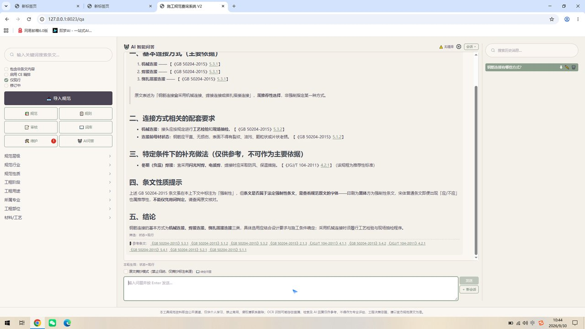
两种回答模式
| 模式 | 说明 |
|---|---|
| 原文摘抄模式 | 禁止归纳，仅从条文库摘抄原文并标注来源，适合需要严谨原文的场景 |
| 综合问答 | 结合条文库内容综合作答，按要点组织并标注参考条文，适合快速了解 |
使用步骤
选择回答模式（原文摘抄 / 综合问答）。
在输入框输入问题（如「钢筋连接有哪些方式」），按 Enter 或点击发送。
等待检索与生成：回答会显示「筛选：状态=现行」等本轮生效的过滤口径，并列出参考条文编号。
右侧会话区可查看历史问题；点击+ 新会话开启新一轮对话。
系统设置
SETTINGS在功能页面右上角点击设置，打开系统设置弹窗，配置 AI 问答及分类所使用的后端模型，以及 OCR 识别参数。
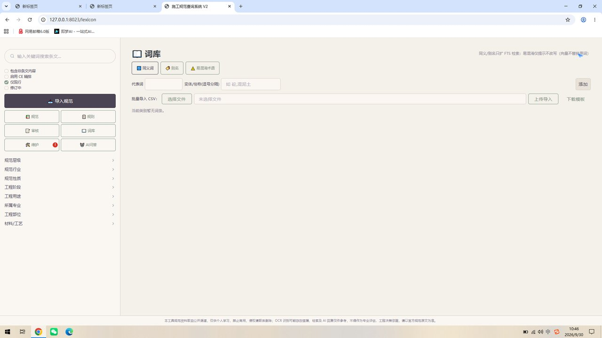
AI 问答及分类
选择后端模型并为各模型分配能力：
| 后端 | 说明 |
|---|---|
| Claude Code / Codex | 使用本地 CLI 工具，需已安装并登录对应命令行 |
| 豆包 / DeepSeek / GLM / Kimi | 云端模型服务，按部署时配置的 API 接入 |
| 自定义 | 自定义 API 地址与密钥接入 |
每个模型可分别勾选AI 问答与AI 分类能力，将不同任务分配到不同后端。修改后点击保存生效，点击取消放弃更改。
合规与免责声明
COMPLIANCE本工具在所有页面页脚统一显示以下提示语：
使用注意事项
- 规范文本多由公开渠道获取并经 OCR/解析入库，可能存在错漏，引用前请核对官方纸质/PDF 原文。
- 检索结果与 AI 回复仅供学习参考，不得作为专业评估与工程决策依据。
- 规范存在版本更替，使用前请确认所引用条文是否为现行有效版本。
- 涉及强制性条文判定、工程验收等关键场景，务必以官方规范原文为准。
常见问题
FAQQ1：导入规范后列表里看不到？
导入完成后需要刷新页面（浏览器刷新或重新进入「规范」页）。若仍不显示，请检查导入对话框是否提示「导入完成」，并查看「维护」页日志。
Q2：检索结果不精准 / 精排不生效？
「启用 CE 精排」依赖向量索引与 embedding 模型。请在「维护」页运行健康检查，确认AI 模型就绪；若模型缺失，检索会退化为纯关键词匹配，需按提示补充模型并重建向量索引。
Q3：AI 问答没有回复？
请检查「设置」弹窗中的 AI 后端是否已配置并勾选了「AI 问答」能力，同时确认本地 CLI（如 Claude Code）已安装登录，或云端 API 可用。
Q4：AI 分类的建议去哪里确认？
运行 AI 分类后，建议进入「审核」页的条文待审分页逐条确认；确认后标签正式写入条文。
Q5：词条添加后列表无显示？
请切换词库类别标签（同义词 / 别名 / 易混淆术语）查看对应列表，或刷新页面；CSV 批量导入请确认使用模板格式且代表词非空。
Q6：如何找回误删的规范？
删除规范不可恢复。请在「维护」页定期使用导出备份；误删后可重新导入备份文件。